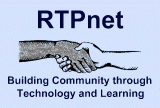

RTPNet

Website:
http://www.rtpnet.org/ Location:
Raleigh, NC
RTPnet is a volunteer-driven membership-based service of Public Information Network, Inc. dedicated to helping North Carolina nonprofit organizations leverage Internet tools to promote and support their missions.
Our special focus is North Carolina and its Research Triangle but we will serve eligible users anywhere.
Supported Projects
CTC Support and Program Building
Vahid Nourani
9/2004 — 9/2006
Vahid evaluated the Tech Link Up project, www.techlinkup.org. Vahid Visited ten non-profit organizations to evaluate and assess their IT needs (on going). He volunteered at four organizations, with tasks such as teaching, computer networking, computer lab setup, and data management. He helped computer recipient organizations/families through the Teaming for Technology program of Triangle United Way and IBM programs to install hardware, software, and troubleshooting. He helped with the Teaming for Technology program of Triangle United Way in receiving, transporting, refurbishing, repairing, troubleshooting, and hardware/software installation of used computers and related devices. And Vahid compiled several mailing lists.
Marketing and Outreach
Damita Chambers
9/2004 — 9/2005
My main objective has been to promote RTPnet and Triangle United Way’s activities to the public and potential supporters. In the first six months of service, I tried to promote and strengthen the activities of the two organizations. In the last six months, I tried to focus on increasing the sustainability of those projects.
1. RTPnet
• Helped increase sponsorship for the RTPnet Conference to $2,500.
• Planned and executed RTPnet Conference for about 100 nonprofit and IT professionals.
• Promoted RTPnet, TechLinkUp and the RTPnet Conference at the N-TEN Nonprofit Technology Conference and the CTCnet Conference.
• Created a detailed how-to manual to plan next year’s conference.
• Helped shape discussion for 2006 conference in Winston-Salem or Greensboro area.
• Helped shape new RTPnet web site and Judy Hallman’s article for Community Technology Review.
2. Triangle United Way
• Helped plan and volunteered at Triangle United Way’s Agency Communications Committee workshop, “Getting Wired for Success.”
• Helped recruit speakers for the TUW workshop, including two speakers from the RTPnet Conference.
• Helped plan the events and agenda for TUW’s Internal Campaign and created the PowerPoint presentation for the Kick-Off event.
• Research grant opportunity and potential partners for an MLK Service Day sponsored by TUW.
• Volunteered for TUW’s Annual Meeting and Campaign Kick-Off event.
3. TechCoop and 501 Tech Club
• Planned and executed 501 Tech Club meeting with the most number of attendees.
• Increased membership on the club’s email list by promoting the 501 Tech Club to partners and contacts I’ve made through RTPnet.
• Planned a TechCoop to lead a discussion on a strategic plan for the future of 501 Tech Club meetings.
CTC Youth Program Building
Chad Custer
8/2003 — 8/2004
Goal 1: Continue the after-school computer-training program (CLICK) for students at Rogers-Herr Middle School in Durham, North Carolina.
Goal 2: Expand the computer-training program (CLICK) to a community technology center (CTC), such as the West End Community Center or the Lakewood Center in Durham, North Carolina.
Goal 3: Further develop and evaluate the template for scaling and replicating the program in North Carolina and nationwide.The main purpose of the CLICK website is to allow other organizations access to the lessons.
Goal 4: Encourage public and private sector resources to enable the project to continue after the Members leave.
A pretest and post-test was implemented during the first section of CLICK, which underscored the need for CLICK and the quality of the lessons. The pretest/post-test was a shortened version of the skills portion of the North Carolina Computer Competency Exam. The mean score on the pretest of the students who completed CLICK was 22.5%, with a high score of 49% and a low score of 6%. Coming into CLICK the students were lacking the most basic of computer skills. The mean score on the post-test of those same students was 74.3%, with a high score of 89% and a low score of 60%; a drastic improvement. On an individual student basis, no student increased his or her score by less than 32 percentage points. With a mean score increase of 51 percentage points, it is clear that CLICK is both needed and effective.
Some of Chad’s major accomplishments have been that he successfully introduced the program to Lyon’s Park Community Center; revised all of the lesson plans and oversaw the development of new lessons for the younger audience at Lyon’s Park; completely redid the website; instigated the donation of computers from the Franklin Center to Rogers-Herr; put together background and procedural information for future coordinators of CLICK; instigated a relationship with Gary Ybarra in Engineering, which resulted in $5,000 worth of support in the form of assistant coordinators; and successfully set up the program for next year (so the transition is as seamless as possible).
The relationship between CLICK and the Rogers-Herr after-school program has changed in the past and most likely will change in the future. During the first semester of CLICK there were two sections meeting twice a week. One section was for students enrolled in the after school program and one section was for students who were not part of the after school program. Attendance for the after school section was very poor while attendance for the non-after-school section was good. This was caused, at least in part, by changes in after-school administration and staff shortages at Rogers-Herr.
“In tutoring the youth in our CommUNITY Scholars program, I’ve noticed many have computer homework assignments as early as the 4th grade! Students are asked to write essays and to research cities, nature or historical figures. Most are familiar with the computer from playing computer games or surfing the web but do not know how to use software tools or how to properly position their hands to type. CLICK teaches basic skills to allow students to efficiently complete homework assignments and, ultimately, have more confidence functioning in a growing computer-based world.”
Jill Potters (Executive Director of Calvary Ministries of the West-end Community)
CTC assistance
Martha Moore
2/2001 — 6/2004
The scope and activities of Martha’s job have been changing. Our original plan was for her to work with adults to develop job skills. However, the Learning Center is now leased to the John Avery Boys and Girls Club. They are liable for activities in the Center, and they only want activities in the Center when there is a John Avery Boys and Girls Club person there. So Martha’s worked has changed scope.
Martha acquired a new Internet linux server (donated from Teaming for Technology) She also has gotten new network wiring and hubs. New software was acquired from fees from computer classes and donations. She has forged a partnership with Goodwill Training for free online classes.
Working with GCF online training, she has renewed her partnership with them and now facilitates classes of Adult students online.
She is upgrading the computer lab. She has gotten more furniture for the lab. She will be acquiring from Teaming for Technology 20 upgraded units (17 for the lab and 3 to go to students in the community). The Lab will also be re networked.
She is also a Durham Area Transit Authority (DATA) Pride Ambassador. She assists the bus drivers with issues that she can handle to help the bus driver do his job more effectively. She goes to monthly meetings to help in transportation decisions for her community. The perk that comes with this is that she gets to ride the bus free for a year.
“I’m proud of the work Martha has done and have enjoyed working with her.”
- Supervisor
Youth Digital Literacy Training Development
Douglas Dumont
6/2002 — 6/2003
Douglas worked with Duke University faculty and students to develop CLICK (Creating Literacy in Computer Knowledge), a computer literacy training program for 6th graders. CLICK develops computer skills for at-risk middle school students, engaging them in an after-school setting that is interactive and fun. CLICK lessons include Internet research, word processing, spreadsheets, databases, and multimedia presentations. The website (http://www.duke.edu/web/isis/click/about.html) contains downloadable lesson plans and teaching modules, as well as tips and hints for starting up a technology training class.
Douglas worked very well with Duke’s faculty and students. He recruited and trained students to teach CLICK, and he worked with the faculty and staff of the ISIS (Information Science and Information Studies) certificate program, primarily Edward A. Shanken, Executive Director, and Katie Watchman, Program Coordinator.
Douglas is now a graduate student in Biomedical Engineering at Duke.
I am especially pleased with Douglas’ work. He completed all his tasks exceptionally well.
CTC Program Building
Ella Holden
4/2002 — 4/2003
This year has been successful, for we conducted the following classes here at the Riley Hill Technology Center: Excel, PowerPoint, Microsoft Word, as well as Introduction to the personal computer. The total number of students attending was 54. As Ella says, “I was blessed with seven volunteer instructors by advertising in the community. I was also privileged to teach Microsoft Word with an Introduction to the Personal Computer.”
A Computer Repair course was developed for Riley Hill Community Technology Center. Ella decided to use two resources to develop this course: Computer Concepts (Third Edition) and Technology for Social Change’s curriculum (www.tecschange.org) with their permission. Ella also planned to use the RTPnet site as a reference for this course.
Developing this course has helped Ella to better troubleshoot computers, for there are individuals in the community that are in dire need of help. These individuals bring their personal computers to the center for technical support. In the Wendell Community and surrounding areas, the Riley Hill Technology Center is the only source that does not charge a fee for service.
We very grateful to add our source of Volunteers & Technology Resources. We have used the following sources this year (2003-2004):
• Schools (K-12) students as well as other personnel
• Community Colleges
• Libraries (Public and Other)
• Local businesses
• Wake Forest Pediatrics (Wake Forest, NC)
• Churches (Wakefield, Zebulon First Baptist etc.)
• RTP.net (Website)
• Family and Friends of staff members
• Department of Social Services (Eastern Regional Center, Zebulon)
• Retired Senior citizens
The quality of life has improved for the youth and adults who have taken computer classes at the center, however updating the computer equipment as well as software is still needed. We are currently looking for funding for this project and for a long-term way of sustaining the center. The Riley Hill Survey Plan has given some insight on how to get this plan implemented.
“Ella has done an outstanding job in coordinating and teaching classes as mentioned in her report this period. She is very dependable, very cooperative, a team player, and continues to be an asset to the Riley Hill Community. Her interaction with others (peers, youth, students, etc.) is outstanding. During this time period, there have not been any negative comments received regarding Ella. To sum it up, I would rate her as ‘Consistently Exceeds’ the requirements in all aspects of the job.”
- supervisor
CTC Outreach and Database Management
Shirlene Rogers
11/2001 — 1/2003
Shirl completed her year of service in November 2002 and extended service through January 2003.
Shirl assisted the president of the CTCNet board of directors (Erroll Reese, Durham, NC) with CTCNet program development and capacity building. She helped coordinate activities with national conference and meetings and followup with local leaders.
In addition, Shirl developed a PC Access database for RTPnet. The database consists of information gathered from an online form, http://www.rtpnet.org/rtpnet/vol.html The database allows us to find volunteers with skills that meet current needs and it allows us to keep information about volunteers current. The database contains about 50 entries.
CTC Technical Support
Eugena Harrington
2/2001 — 2/2002
The anticipated outcome of this project is a functioning, responsive technology support service for Triangle Area Centers for Technology (TACT) that will assist technology centers which are primarily in low-income neighborhoods.
Duke University currently provides one person to oversee technical support for community tech centers in Durham. The AmeriCorps*VISTA member will work with this person and other members of the tech support committee to plan and develop a working technology support group.
The VISTA member will identify and document support services to be provided by the TACT support committee, develop an expertise list that the Help Desk will use to forward problems, develop lists of recommended hardware and software for technology centers, as well as installing and troubleshooting computer systems and providing routine maintenance.
Gena is providing tech support for a large number of centers (about 20) in Orange, Durham, and Wake counties and she is helping some schools in the area. She is creating inventories for the centers, defining standards, and writing guides. Standards will help RTPnet provide technical support for the centers. Similarly, when there is a problem, the inventories will give tech support people preliminary information that will facilitate troubleshooting.
CTC Support
Kimmora McKinnie
8/2001 — 2/2002
The anticipated outcome of this project is a functioning, responsive technology support service for TACT (Triangle Area Centers for Technology) that will assist technology centers which are primarily in low-income neighborhoods.
The purpose of TACT is to facilitate the introduction, use, and support of technology in community centers and schools in the Triangle area through partnerships that bring resources and needs together.
An anticipated by-product of TACT is the creation of technology support jobs in the community that provide a career path from entry-level jobs through various levels of support for technology center hardware and software to technical jobs in local companies.
The AmeriCorps VISTA will work with the technical support committee to plan and develop a working technology support group. They will also identify and document support services to be provided by the TACT technology support committee, develop an expertise list that the Help Desk will use to forward problems, develop lists of recommended hardware and software for technology centers, as well as installing and troubleshooting computer systems and providing routine maintenance.
Related Content
None created yet!